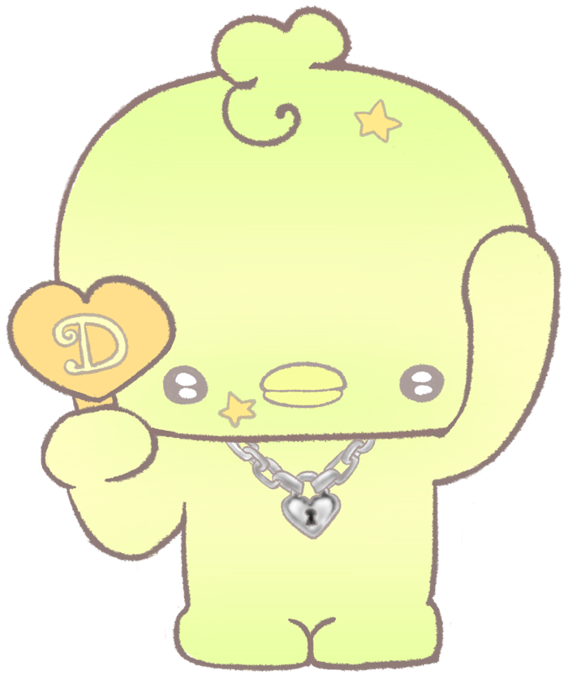
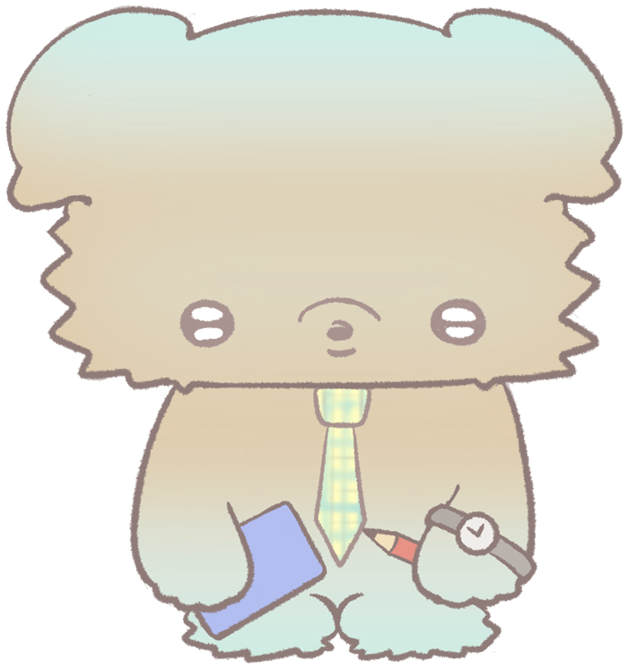

世界觀設定 Story
to: 正在讀這段話的你
最近，是不是有一點累？
說不上來在煩什麼，只是心裡悶悶的，好像有很多話，卻不知道要跟誰說。
如果是這樣，那你來對地方了。
在城市某個安靜的轉角，有一棟小小的房子，只在有人需要的時候亮起燈。
這裡不會問你「為什麼還沒變好」，只會先幫你倒一杯茶。
— 喫茶屋 It's Tea Time
-
序
小女孩的扮家家酒
這是一個關於小女孩扮家家酒的故事。
小時候的她，總喜歡自己想像出不同的角色，把生活中感受到的情緒、煩惱與想法，投射到三個玩偶身上。
Rabumi、Dokimi、Gurumi 並不只是普通的玩偶，而是陪伴她成長的三個心理投射。 -
1
洋娃娃屋裡的三個孩子
小女孩擁有一間洋娃娃屋，以及三隻陪伴她的娃娃。在現實世界裡，她會和娃娃們一起玩耍、吃下午茶、聊天，替娃娃們安排生活。
而在她的想像世界裡，三隻娃娃都有了自己的生命，小女孩也成為了三個孩子的「媽媽」。那間洋娃娃屋，就是她為孩子們準備的家。 -
2
長大，然後走散
隨著小女孩慢慢長大，三個角色也在她的想像世界裡一起長大，擁有了屬於自己的生活。
三人從小住在一起，是朋友也是室友；長大後，因為各自有了自己的夢想，就慢慢疏遠了。 Rabumi糕點師經營著自己的甜點店，興趣是找人聊天
Rabumi糕點師經營著自己的甜點店，興趣是找人聊天
Dokimi網紅美食家・房屋仲介到處吃美食、拍影片，也幫人找房子
Gurumi補習班班導師每天處理大量考卷和成績單，喜歡看心靈叢書 -
3
甜點店的重逢
Gurumi 在補習班上班，每天看著學生們被考試追著跑，就想起從前的自己。工作一忙起來，唯一放鬆的時候，就是去 Rabumi 的甜點店買甜點，慢慢成了店裡的常客。Rabumi 很開心每天都有 Gurumi 可以聊天、說說煩惱，兩人因此重新熟了起來。
Dokimi 則因為到甜點店幫忙推廣，愛上了甜點，開始經常光顧。三人漸漸又成為會一起吃下午茶、分享生活與煩惱的朋友——就像以前一樣。 -
4
那棟從小一起長大的房子
某一天，Rabumi 和 Gurumi 聊起小時候的夢想：「如果有一個地方，可以一邊吃下午茶，一邊讓人說說自己的煩惱，好像很不錯。」
這時，Dokimi 想起了三人從小一起生活的那棟房子。雖然只是一棟小小的房子，卻承載著大家從小一起長大的回憶。「不然，就把這裡變成我們想要的地方吧？」— Dokimi
於是三個人決定一起整理這棟房子，讓它成為一個可以吃下午茶、聊天，也能自在說出煩惱的空間——喫茶屋 It's Tea Time。
-
5
回來的「媽媽」
喫茶屋開張的那天，門口來了一位穿著女僕裝的女生。她笑著說：「從今天起，我就是這裡的主人，也是大家的管家——叫我莓露露吧♡」
她其實就是長大後的小女孩。
長大以後，她也有了好多說不出口的煩惱；而那三個陪她長大的孩子，一直都在。於是她回到這棟房子，再玩一次扮家家酒——這一次，她扮演的是喫茶屋的主人，替每一位客人泡茶、準備點心、記住每個人的名字。「原來長大以後，還是可以扮家家酒呀。
用溫柔的方式，照顧心裡的那個小孩。」— 莓露露 -
6
然後，你來了
聽說，喫茶屋只會出現在心裡有煩惱的人面前。
當你輕輕敲門，莓露露會問你的名字，帶你到客廳的沙發旁。那裡坐著三個孩子，每一個都帶著一種煩惱——
選一個和你最像的孩子，他會先說出自己的心事，再陪你慢慢說出你的。在這裡，三個孩子就像一面鏡子——你會在他們身上，看見自己的煩惱。